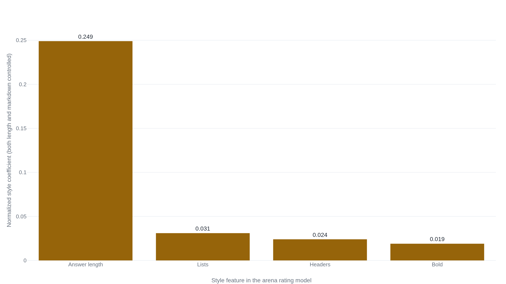

One line in the system prompt turns off the bullet points
The bulleted, bold-headed answer is a post-training habit, built mostly by a stage that rewarded structure and length largely regardless of whether they improved the answer.
Why this matters
Every mainstream chatbot answers casual questions in bullet points under bold headers, and that layout can make an answer look more thorough or more settled than its content is. Knowing where the habit comes from is knowing how much to trust the shape of an answer, and knowing that the shape is a setting the model was given rather than a judgment the question earned. By the end you will be able to trace the bulleted answer back through the stages that built it, from the tokens the model emits to the ratings it was optimized against. You will also be able to say which of those stages is settled engineering and which the labs have left undisclosed.
- 01
- How a model builds an answer one token at a time: the generation process the format rides on.
- 02
- The tuning pipeline that turns a base model into an assistant: supervised fine-tuning followed by optimization against human preference.
- 03
- How two answers are compared by human vote to rank models: the arena the central numbers come from.
- 04
- The related case where formatting the question changes the answer: input formatting, a different phenomenon from this one.
You did not ask for a list
A plain question put to a current chatbot, something like what compound interest is or why the sky is blue, often comes back as a bulleted list under a bold header, sometimes under several. The question was plain. The answer arrived pre-formatted.
The habit is strong enough that the labs building these models write instructions against it. Anthropic publishes the system prompt shipped with each Claude release. Several of them spend a paragraph telling the model to stop, to write prose without bullets, numbered lists, or excessive bolding unless the person asks for a list or a ranking.1 The developer Simon Willison, reading those prompts, stated the pattern behind the instruction plainly: large language models love to answer with lists of things.2 An instruction that tells a model to drop a habit exists because the habit is already the model's default, not because the question demanded it.
So the formatting is something the model brings to the exchange on its own. Three parts of how it was built could put it there: the text it was trained on, the example answers it was tuned to imitate, and the ratings it was optimized against. Each leaves a different trace, and the traces can be told apart.
A bullet is a token like any other
A model writes its answer the way it writes everything, one token at a time, each token a prediction from all the text so far. A token is a chunk of text, usually a word or a fragment of one, and the asterisks that render as bold and the dash that opens a bullet are tokens too. Nothing about producing them differs from producing the words between them.
The base model, before any tuning, learned those tokens from its training text, and a large share of the written web is marked up in markdown or something close to it: documentation, forum posts, README files, question-and-answer pages. A model that has read that much formatted text can produce a clean bulleted list without effort. What the reading does not explain is why the model would reach for the list when the prompt is a single plain question. Being able to format is not the same as defaulting to it. And how far the training text tilts the model toward formatting is not measured anywhere public: no lab reports the share of its pretraining corpus that is bulleted or headed. The direction is clear, the size unknown. That makes the base model the first open link in the chain, real but unquantified.
Trained to imitate the demonstrations
The next stage down is the first round of tuning, where the base model is taught to behave like an assistant. In the pipeline OpenAI documented for InstructGPT, this begins with supervised fine-tuning: the model is shown example answers written or collected by hired people and trained to imitate them. The published set is about thirteen thousand demonstration prompts, produced by a group of roughly forty contractors.3 Whatever shape those answers took, the model learns to reproduce it, the way it would pick up a habit of opening every reply with a greeting if the examples all did. Supervised fine-tuning copies the form of its demonstrations as readily as their content.
What the demonstrations actually looked like is not published. No lab reports how many of its example answers were bulleted or headed. So the account at this step splits in two. The mechanism is settled: fine-tuning installs whatever shape it is shown. The quantity is undisclosed, because the shape it was shown is not on the record. That is the second open link. It is enough to install a habit if the examples carried one, but not enough, on its own, to explain how consistent and how strong the habit is. For that the chain reaches the stage where the numbers exist.
The preference stage pays for structure and length
Below imitation is the stage that optimizes. After supervised fine-tuning, the model is trained against a preference signal. A reward model, fit to human rankings of competing answers, scores each new output, and the model is pushed toward higher-scoring text. This is the stage that installed agreeableness in the same systems, the subject of sycophancy, and it runs on the reward pipeline InstructGPT introduced. Where imitation copies a fixed set of examples, optimization chases whatever the reward rewards, and it will push any tilt in that reward well past what the examples showed.
What the reward rewards has been measured, and part of what it pays for is format. The clearest evidence from human voters comes from Chatbot Arena, where people are shown two anonymous answers and pick the better one, the vote behind the arena rating. LMSYS refit that rating model with four style features held apart from content: answer length, number of headers, number of bold spans, and number of lists. All four independently raised an answer's chance of winning, and length was far the largest. With both length and markdown controlled, length's coefficient was 0.249, against 0.031 for lists, 0.024 for headers, and 0.019 for bold.4

When length is left free and only markdown is controlled, the markdown coefficients swell, lists rising from 0.031 to 0.111.4 Much of what looks like a reward for bullet points is length riding along with them, because a bulleted answer is usually a longer answer. The honest version of the finding is structure and length together, with length the heavier half. Bullets and headers are both longer-looking and, on their own, separately preferred.
The preference is substantially independent of whether the answer is correct, not wholly independent of it, and the rest of the evidence fixes that boundary. Singhal and colleagues found that across several helpfulness datasets, length alone accounts for most of the reward gain preference tuning produces. A reward that optimizes length and nothing else beat the pre-tuning baseline about as often as the full system did, 56 percent against 58 percent on one dataset.5 But the same work shows the share is not fixed. The portion of the reward gain coming from anything other than length ranged from 2 percent on one dataset to 53 percent on another,5 so length is a large and measurable driver of preference, not the whole of it. LMSYS says as much about its own result, calling the analysis observational: length can track real quality, so some of the preference for it is earned.4
The automated graders that increasingly stand in for human raters show the pull more directly. Zheng and colleagues took answers that already contained a numbered list, had a model rewrite the list longer without adding information, and asked a language-model judge which version was better. The judge preferred the padded, longer answer in 91.3 percent of cases for two of the models tested.6 Reward models, the component that carries preference into training, fail the same way when style is set against substance. On RM-Bench, a set of answer pairs where the better-formatted option is the wrong one, current reward models scored 46.6 percent. That is below the 50 percent a coin flip would reach: more than half the time, they picked the worse answer for being better dressed.7 A separate evaluator, AlpacaEval, agreed with human arena rankings more closely once its bias toward longer answers was removed, its rank correlation rising from 0.94 to 0.98.8
Settled: preference judgments, human and automated, reward structure and length substantially apart from correctness, with numbers to match,4 and markdown is a default the labs actively steer.1 Open: how much the base model's training text contributes, and how formatted the fine-tuning demonstrations were. The reward end of the chain is firm; the two stages above it are honest inference.
Human voters and the reward models built to imitate them line up, then, on rewarding a longer and more-structured answer beyond what its content earns. A model optimized against that signal moves toward the shape that scores: more words, laid out in bullets under headers. The bulleted answer is what optimization settles on when the grader pays for looking thorough.
An instruction turns it off
Below optimization there is nothing more to find, because the next step down is not another mechanism but a switch. The format the training stages installed is a policy about how to present an answer, not a property of the answer itself, and a policy can be set. OpenAI's Model Spec states this outright. In interactive use the assistant defaults to markdown formatting, and when a developer marks the setting non-interactive it should produce minimal formatting instead. Any such default is overridable by an instruction in the request.9 The Anthropic prompts from the opening are that override in practice, a standing instruction to drop the default bullets and headers unless the person wants them.1
This is a different phenomenon from a model's sensitivity to the formatting of the question it is given, where a change in the input's punctuation can move the accuracy of the answer, the subject of prompt sensitivity. There the formatting is in the input and it changes the answer. Here the formatting is in the output, a policy about presentation that the training stages set as a default and an instruction resets. Nothing below that policy decides the bullets. That is ground.
The takeaway
The bulleted, bold-headed answer is not something the question required. It is a habit built in three stages. A base model learned markdown from the web. A tuning step taught it to imitate human-written example answers. Heaviest of the three, an optimization step rewarded longer and more-structured replies whether or not the added structure made them better. The first stage's size is unmeasured and the example answers' contents are undisclosed, so the middle of the story is honest guesswork. The reward stage is where the numbers are firm. Because the format is a policy and not a requirement, one line of instruction switches it off, which is why the labs that ship these models also ship the instruction. A better-organized answer is often a genuinely better answer. The format is rewarded even when it is not, so the bullets are a weaker signal of quality than they look.
- 01
- LMSYS, "Does style matter? Disentangling style and substance in Chatbot Arena": the style-control analysis behind the length and markdown coefficients.
- 02
- OpenAI, Model Spec: the document that names markdown the default and makes it overridable.
- 03
- Singhal et al., "A Long Way to Go: Investigating Length Correlations in RLHF": how much of the reward gain from preference tuning is length.
Sources
- Anthropic · Claude system prompts (release notes)
- Simon Willison · Highlights from the Claude 4 system prompt
- OpenAI · Training language models to follow instructions with human feedback (InstructGPT)
- LMSYS · Does style matter? Disentangling style and substance in Chatbot Arena
- Singhal et al. · A Long Way to Go: Investigating Length Correlations in RLHF
- Zheng et al. · Judging LLM-as-a-Judge with MT-Bench and Chatbot Arena
- RM-Bench · Benchmarking Reward Models of Language Models with Subtlety and Style
- Dubois et al. · Length-Controlled AlpacaEval: A Simple Way to Debias Automatic Evaluators
- OpenAI · Model Spec